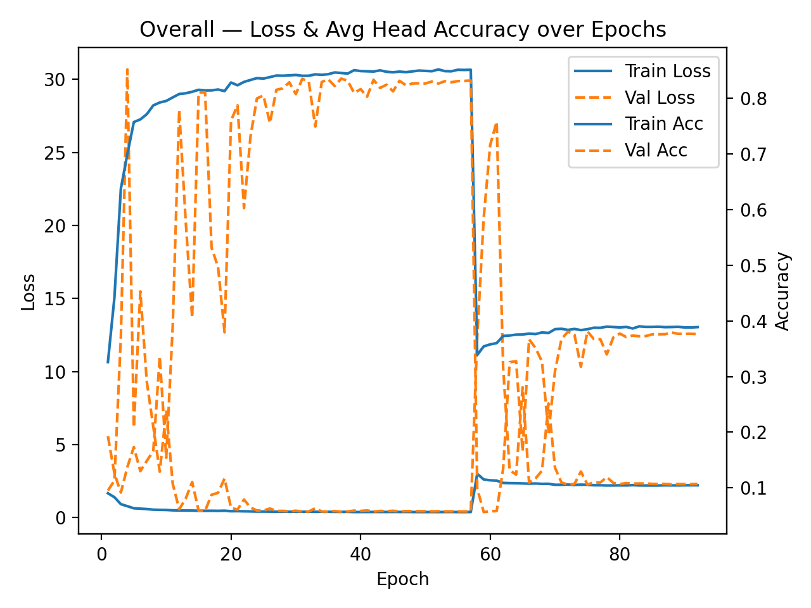
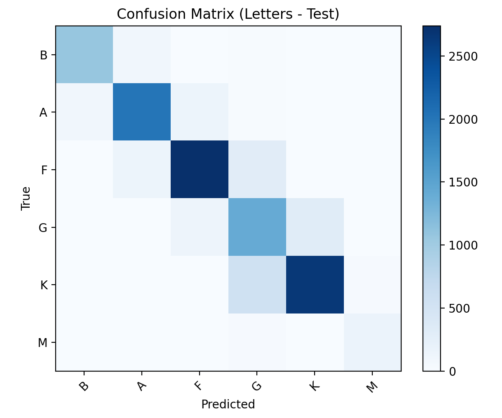
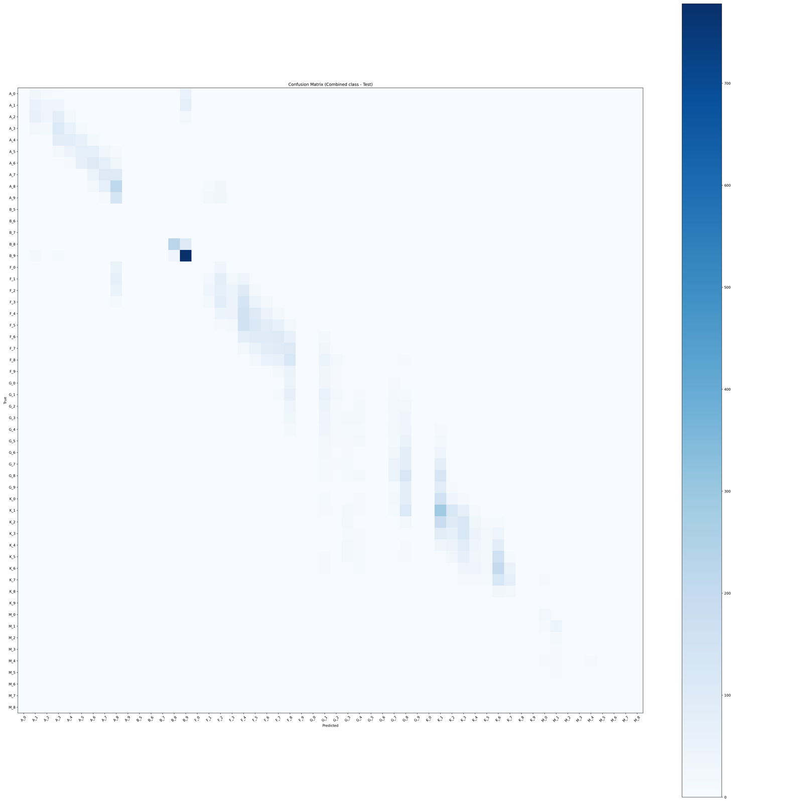

Overview
A catalog-driven deep-learning pipeline that classifies stars from RGB image cutouts. The model predicts the Morgan–Keenan spectral letter (O, B, A, F, G, K, M) and the subclass digit (0–9 within the predicted letter) from photometric imagery alone.
Inputs are constructed by querying VizieR catalogs for coordinates, magnitudes, colors, and spectral hints, then fetching color cutouts from Pan-STARRS with graceful fallbacks to other surveys. Each cutout is preprocessed to expose color cues without saturating the stellar core, then routed through a multi-task CNN.
Pipeline
Three independent stages — catalog ingestion, image builder, and classifier.
- Catalog ingestion — programmatic queries against Gaia DR3, HIPPARCOS, PS1, and WISE assemble a unified metadata table (coordinates, magnitudes, colors, effective-temperature hints, spectral types where present).
- Image builder — fetches color cutouts, recenters and stretches them, scales toward a magnitude-aware target peak to avoid blown cores, and rejects grayscale or low-quality frames via explicit quality gates.
- Multi-task CNN classifier — three heads (letter, combined letter × subclass, stage) trained jointly. The combined head lets the model learn letter-specific subclass boundaries from a single softmax.
Dataset
The raw class distribution is steeply imbalanced — K and F stars dominate; O and M are rare. The builder applies a "curved" target distribution to soften this skew without throwing away the long tail.
| Letter | Before balancing | After balancing |
|---|---|---|
| K | 30,901 | 26,154 |
| F | 30,117 | 25,754 |
| A | 17,127 | 18,356 |
| G | 12,072 | 14,881 |
| B | 5,537 | 9,322 |
| M | 285 | 1,572 |
| O | 78 | 283 |
| Split | Images |
|---|---|
| Train | 67,227 |
| Validation | 14,406 |
| Test | 14,406 |
Quality gates
- Minimum peak intensity and peak-to-background ratio.
- Maximum centroid offset from frame center.
- Maximum fraction of saturated pixels.
- Grayscale detection — RGB channels must carry independent information.
Model architecture
A compact, regularized three-block ConvNet with three jointly-trained heads.
Conv → BatchNorm → ReLU blocks feed global average pooling and dense layers. Three softmax heads sit on top:
- Letter head — softmax over the present spectral letters.
- Combined head — softmax over
letter × 10 + subclass, letting the model learn letter-specific subclass boundaries from a single classifier. - Stage head — softmax over evolutionary stage, used whenever stage labels are available.
Training
Two-stage. Stage 1 optimizes the letter head alone to establish a stable backbone.
Stage 2 unfreezes the full multi-task model, balancing letter and combined-head losses;
the stage head joins if any stage labels are present. Class balance is handled by
curved resampling plus class-balanced sample weights. The 70 / 15 / 15 split is
stratified on letter; tf.data caching and prefetching keep the input
pipeline ahead of the GPU. Plateau-triggered LR reductions and early stopping with
best-weight restoration prevent overfitting.

Results
The letter head is the headline number — it tracks the macroscopic temperature sequence robustly. Subclass resolution is harder because RGB cutouts encode color differences only coarsely.
- 84.3% Letter top-1 7-class softmax (O, B, A, F, G, K, M)
- 98.4% Letter top-2 Adjacent-letter confusion is common but bounded
- 0.846 Letter macro F1 Precision 0.847 / Recall 0.848
- 34.4% Subclass | correct letter Top-2 subclass: 54.1%
- 30.6% Subclass overall 10-way digit prediction
- 30.2% Combined exact Exact letter + digit match
Letter confusion matrix
Test set letter-head confusion across the seven spectral classes. The diagonal dominates as expected; what little off-diagonal mass exists is concentrated on adjacent letters in the temperature sequence.

Error analysis
Confusion concentrates at decision boundaries that are physically adjacent — the model is learning a smooth temperature sequence rather than memorizing class identities.
- Letter confusion is dominated by A/F, F/G, and K/M pairs — neighboring colors in the H–R diagram.
- Subclass errors are locally smooth: typically off by ±1 subclass. Large jumps occur primarily where the underlying subclass has few training examples.
- Combined accuracy tracks letter accuracy — when the letter is right, subclass resolution is competitive; misclassified letters drag the combined number down by construction.

Utilization program
The inference script loads the trained model and the class map, reads new star images, applies the same preprocessing as training, and writes per-object predictions for letter and subclass with confidence scores. Batch evaluation produces a CSV that can be merged back onto catalog rows for downstream analysis.
Limitations & future work
- RGB-only inputs — spectral subclass boundaries are intrinsically fuzzy in three-band photometry and are confused further by interstellar reddening.
- Saturation & centring — performance is sensitive to data hygiene; quality gates exist, but borderline frames still leak through.
- Rare classes — O and M, even after balancing, are limited by raw availability. Targeted sampling or modest augmentation would help further.
- Next directions — calibrated photometry, extinction estimates, NIR bands, and attention pooling over radial profiles are the most promising routes to sharper subclass resolution.
Links
Dataset, full writeup, and source.